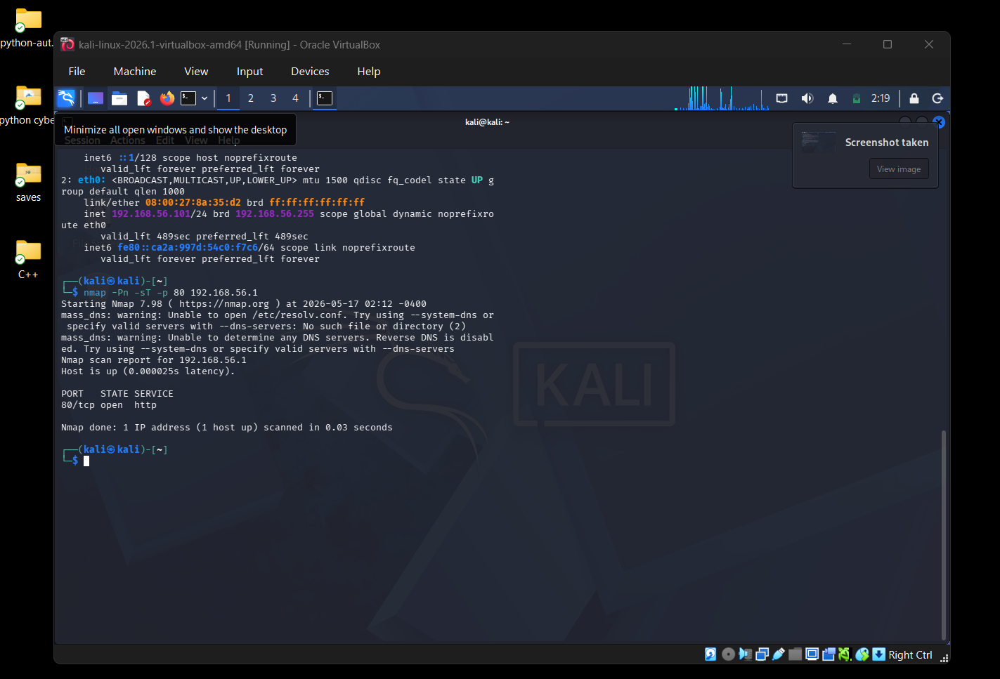
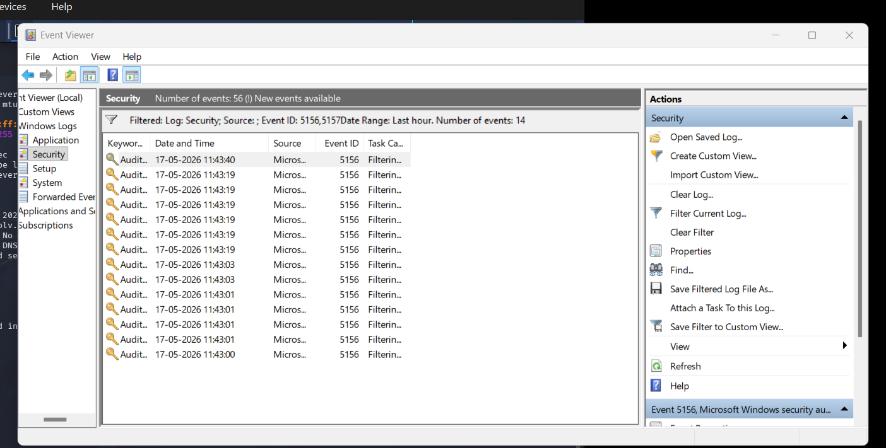
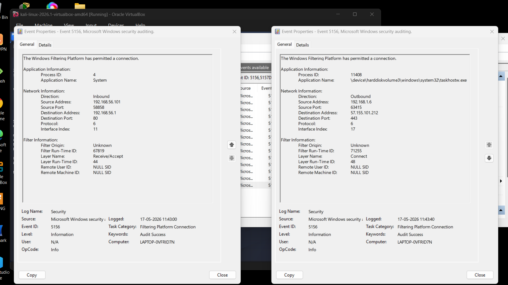

← Back to Projects
🛡️ SOC Home Lab
A practical SOC & Detection Engineering home lab built using
Kali Linux,
Windows 11, and
VirtualBox inside an isolated sandbox environment.
Focused on attack simulation, Windows event log analysis, network monitoring, and blue team investigation workflows.
🎯 Objective
The goal of this lab was to understand how attacker-generated traffic appears inside Windows logs and how SOC analysts investigate suspicious activity using event correlation and network analysis techniques.
⚙️ Lab Setup
- Host OS: Windows 11
- Attacker Machine: Kali Linux VM
- Virtualization: VirtualBox
- Network Type: Host-Only Adapter
- Environment: Isolated Sandbox Network
🔥 Attack Simulation
Performed reconnaissance and TCP scanning from Kali Linux to the Windows host machine using Nmap.
nmap -Pn -sT -p 80 192.168.56.1
🔍 Detection & Analysis
- Analyzed Windows Event Viewer logs
- Investigated Event ID 5156 & 5157
- Detected inbound attacker traffic
- Identified source IP and destination ports
- Compared normal vs suspicious network activity
- Correlated timestamps and network events
🧰 Technologies Used
Kali Linux
Windows 11
VirtualBox
Nmap
Windows Event Viewer
Windows Auditing
Networking
Log Analysis
SOC Fundamentals
🧠 Key Learnings
- Inbound vs Outbound traffic analysis
- Windows Event Logging and auditing
- Port 80 (HTTP) vs Port 443 (HTTPS)
- Attack detection workflow
- Basic SOC investigation methodology
- Event filtering and log correlation
📸 Lab Screenshots

Nmap reconnaissance scan performed from Kali Linux VM.

Windows Event Viewer logs showing network activity and security events.

Detected attacker IP address and inbound traffic inside Windows logs.
✅ Result
Successfully built a beginner SOC home lab capable of generating attack traffic and analyzing Windows security logs inside a secure sandbox environment. This project strengthened foundational skills in networking, detection engineering, and blue team investigations.
🚀 View on GitHub